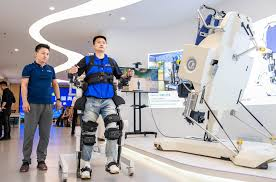
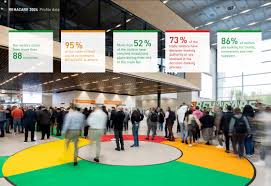

The Focus on Abilities: High-Tech Expo celebrates innovation that empowers individuals with disabilities. This immersive exhibition brings together cutting-edge technologies—from AI-driven mobility devices to brain-computer interfaces— all designed to enhance independence, communication, and inclusion. Through interactive demos, live showcases, and expert panels, we highlight how technology is not just changing lives, but amplifying human potential.
Join us in redefining what's possible when accessibility meets innovation.
The Focus on Abilities: High-Tech Expo offers a powerful platform to highlight the film festival’s excellence by immersing audiences in real-world assistive innovations. Through interactive exhibits, live demonstrations, and storytelling technology, the festival's core message—empowerment through visibility—is brought to life in tangible ways.
By showcasing technologies used by and for people with disabilities—such as AI-powered mobility aids and eye-tracking communication devices—we not only celebrate human potential but also reinforce the impact of inclusive filmmaking. The expo creates opportunities for meaningful dialogue between creators, innovators, and audiences, amplifying the cultural and social influence of the festival far beyond the screen.
✨ Throughout the event, attendees can visit the Focus on Ability booth to explore past award-winning films and share their own stories of overcoming challenges through innovation.